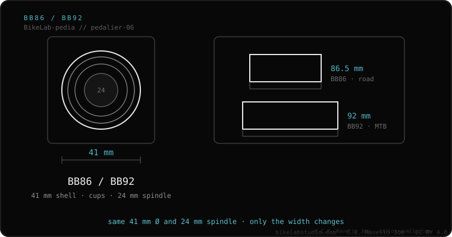

BB86 and BB92 are Shimano press-fit bottom brackets with a 41 mm shell and a 24 mm spindle, mounted in cups. Same diameter, different width: BB86 = 86.5 mm (road) and BB92 = 92 mm (MTB). They are built for Hollowtech II; fitting 30 mm spindles requires tiny, less durable bearings.
These are among the most common press-fit bottom brackets in carbon bikes. Good news: they use the universal 24 mm spindle, so almost any crank has a version for them.
BB86 (road) and BB92 (MTB) are Shimano's PressFit system. The cups that hold the bearing press into a wide shell. That width allows thicker, stiffer chainstays and more tire clearance without changing the chainline.

Optimized for 24 mm spindles (Shimano Hollowtech II and SRAM GXP). You can fit 30 mm or DUB spindles, but in a 41 mm shell the bearings end up with very small balls, prone to early failure. For most riders, a 24 mm crank is the sensible choice.
BB86 or BB92 creaking, or unsure which crank to fit? Send us the case: Message us on WhatsApp
They share the 41 mm shell and 24 mm spindle; they differ only in width: BB86 = 86.5 mm (road), BB92 = 92 mm (MTB).
Not comfortably and natively: in a 41 mm shell, 30 mm bearings use tiny, less durable balls. A 24 mm spindle is ideal.
Exactly 86.5 mm; the extra half millimeter is for tolerance.